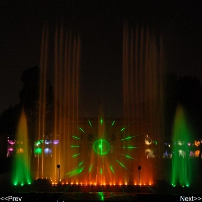

|  |
|
Nagina Wadi Nagina Wadi is a garden themed entertainment ground in the center of the circular Kankaria Lake at the Ahmedabad metropolitan area in Gujarat, India. Nagina Wadi is accessed by a straight, concrete, tree-lined walkway traversing half of the lake. Address: In Center of Kankaria Lake, Kankaria, Ahmedabad, Gujarat 380002 |